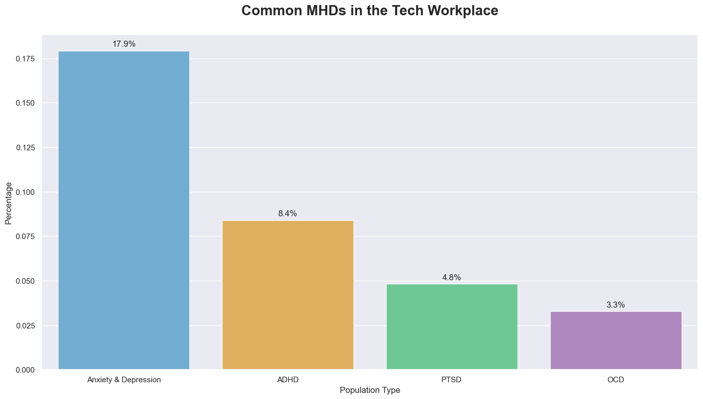
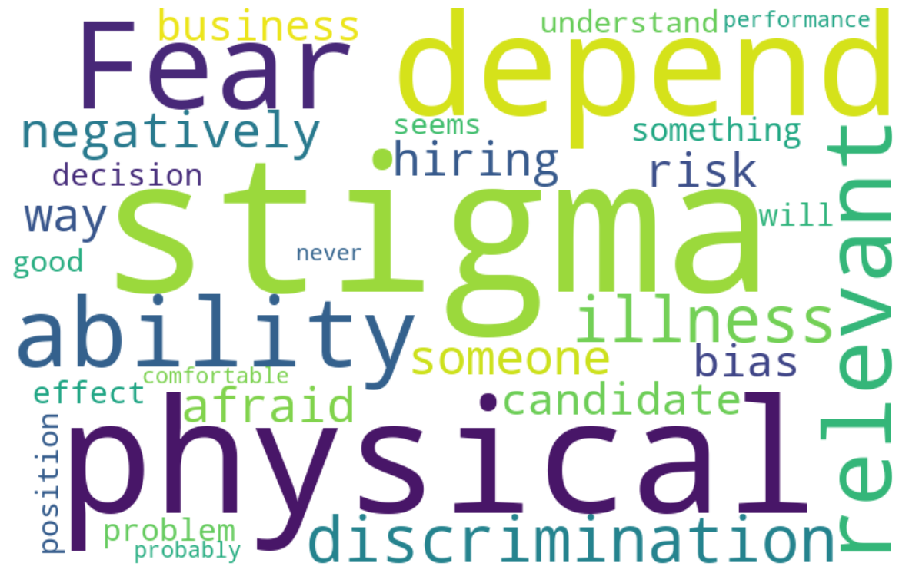
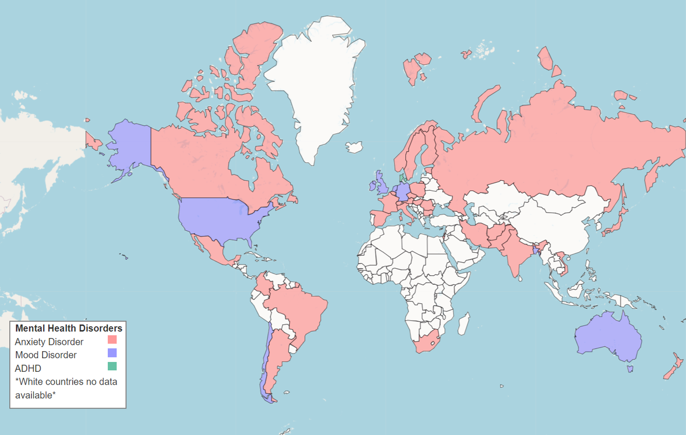
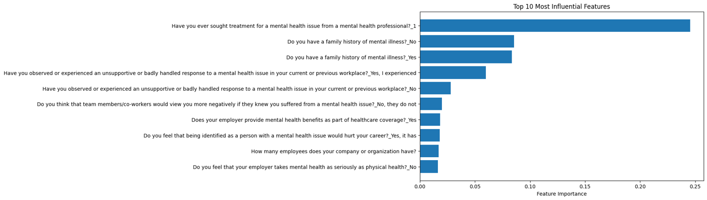

Mental health in tech workplaces
A Business Analytics project at TalTech in Tallinn, written for an HR audience: what does the OSMI 2016 survey say about mental health in tech companies, and what can employers actually change?
- Course
- Business Analytics (MMA3100), TalTech
- Team
- Yaroslava Bozhok, Valeri Makarov, Filippo Navarra
- My part
- EDA, visualisation, modelling, insights, report and presentation
- Date
- October 2024
- Stack
- Python, pandas, scikit-learn, seaborn, Folium, geopandas
Data and cleaning
The OSMI Mental Health in Tech Survey 2016 has 1,433 respondents and 63 questions, many of them conditional, so missing values are rarely random. The cleaning steps:
- Dropped 11 questions with more than half the answers missing (1,433 × 52).
- Removed 418 respondents with no answer on current or previous employer benefits. These were mostly self-employed people who skipped the whole workplace block, so imputing them would invent an employer (1,015 × 52).
- Recoded conditional blanks, such as US state for non-US respondents or follow-ups to a “no” diagnosis, as Not applicable rather than missing.
- Normalised free-text gender into three groups and fixed impossible ages (323 → 32; 3 and 99 → the mode, 30).
- Dropped a question that was hard to impute and two that became constant, ending at 976 respondents × 50 variables.
The target, “Do you currently have a mental health disorder?”, splits 396 yes / 360 no / 220 maybe.
What respondents report


- Most respondents are 25–40, male and US-based; the most common workplace is a company of 26–100 people.
- About 680 said their employer had never formally discussed mental health, and about 610 would not raise a mental-health issue in a job interview. The free-text reasons are dominated by stigma, fear and discrimination.
- Anxiety is the most reported condition across much of Europe, Canada and Asia; mood disorders lead in the US, UK, Chile and Australia.

Modelling
Survey answers were one-hot encoded and the data split 80/20. Random forest, a decision tree, gradient boosting and logistic regression were compared, and a random forest (200 trees, max depth 7, minimum 5 samples per leaf) was selected as the final model.
The model separates “yes” from “no” reasonably well but never predicts “maybe”. That class is genuinely ambiguous, people unsure whether what they experience counts, and the survey gives the model little to tell it apart.

Having sought treatment dominates, as you would expect. The more useful signals for an employer come next: family history, having seen or experienced a badly handled response at work, expecting co-workers to react negatively, and whether the employer provides mental-health benefits.
Recommendations for HR
- Talk about it formally: most respondents’ employers never had, and the interview answers show how much stigma remains. A mental-health ambassador programme was one proposal.
- Make help easy and confidential to reach: free or subsidised counselling, clearly communicated benefits.
- Train managers, because one badly handled case is among the strongest signals in the data.
- Offer flexibility, and repeat the survey regularly so policy follows the data.
Limitations: answers are self-reported, some regions have very few respondents, and the “maybe” class is not learnable from these features.